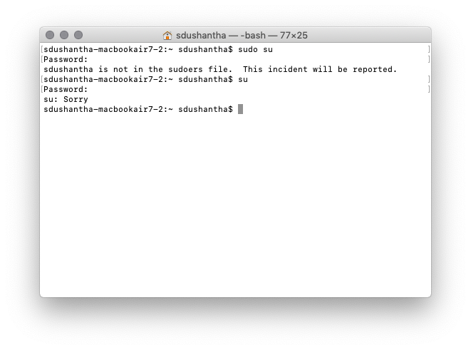
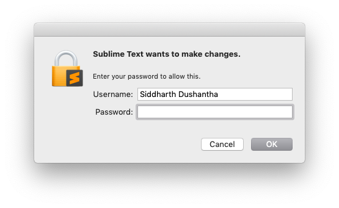
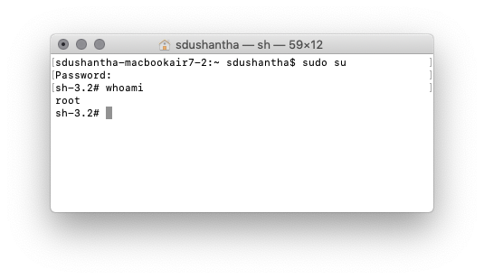
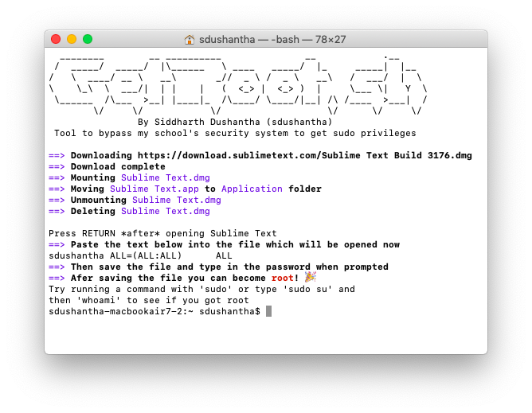

How I was able by bypass my schools security system and gain sudo privileges on the school MacBooks
22 Feb 2019I am very lucky to go to a school which gives us MacBook Airs to use at school and at home. A few months after I got my MacBook, I started to learn about the command line because why not? Something that I noticed while playing around on the terminal was that I was not able to run commands as root.
I kept getting this error when running any command with sudo or if I just ran su:

This was very disappointing because I really wanted to install Homebrew, which is the The missing package manager for macOS.
So what did I do? Well I went right to my IT department at my school and asked them why this was happening. I was told that the reason was that the school had installed device management profiles on the school MacBooks which blocked the students from becoming root because the IT department did not want anyone to mess up their MacBook and lose their school work which was not was not backed up. Oh well, I just had to live with this restriction.
• • •
About a year later…
I was able to bypass the schools security system which blocked me from gaining sudo privileges and actually gain sudo privileges!
How was I able to do it? After doing some research, I found out that I had to addusername ALL=(ALL:ALL) ALL to the /etc/sudoers
file. But I had one problem, I could not edit the file without sudo (I was using nano). I later found out that when using a text
editor like Sublime Text, and edited a file which usually would require me to use sudo when editing with nano or vim,
that I was able to edit and save the file. When saving the file with Sublime Text, it would give me a popup and ask me to type in my password
so that Sublime Text could save the file.

Since I figured out how to edit and save files which usually would require sudo , I went ahead and edited
the /etc/sudoers with Sublime Text and put username ALL=(ALL:ALL) ALL in it and saved it.
I quickly opened up my terminal and typed in sudo su and boom, I was root!

Well now what? There were some steps to achieve this and I was too lazy to type in all the commands every time I wanted do this, so I went ahead and made a bash script called getroot which would do all the hard work for me.

After finding this method to bypass the schools security system, I went to the IT department and told them about this. They said that since I was the only one who knew how to do it, and that they knew that I would not mess up my MacBook, this was not on their priority list to fix.
• • •
And as always, thanks for reading!